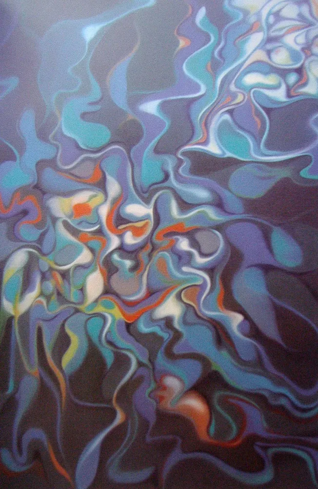
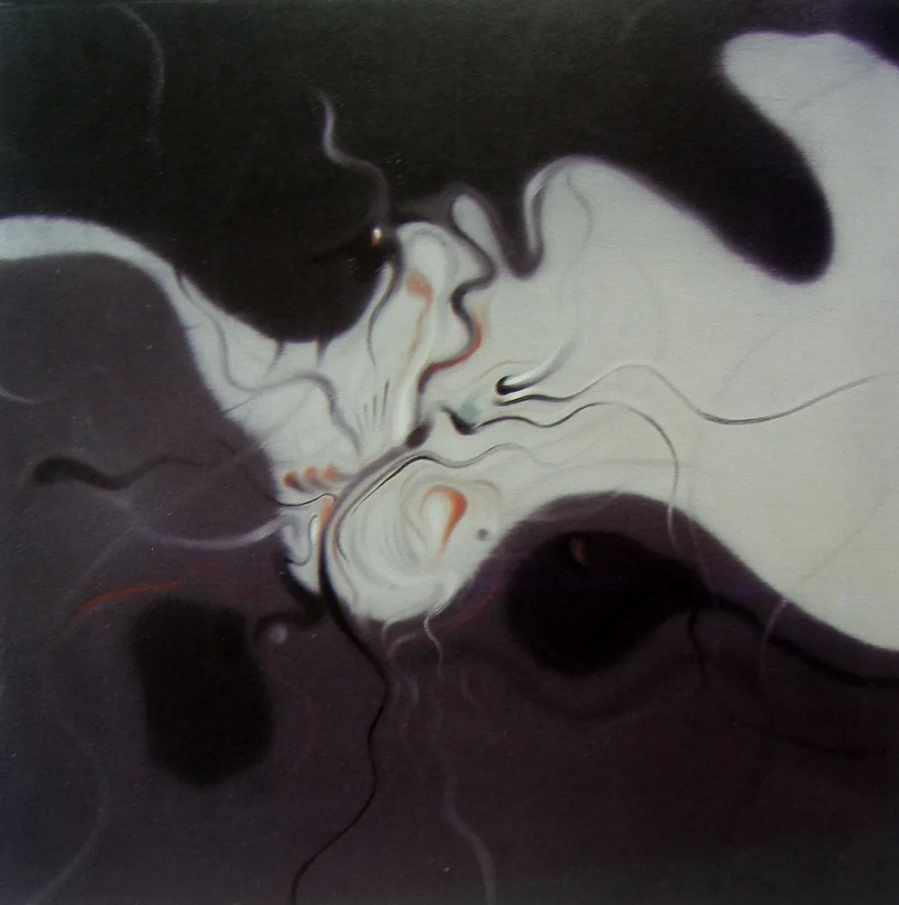
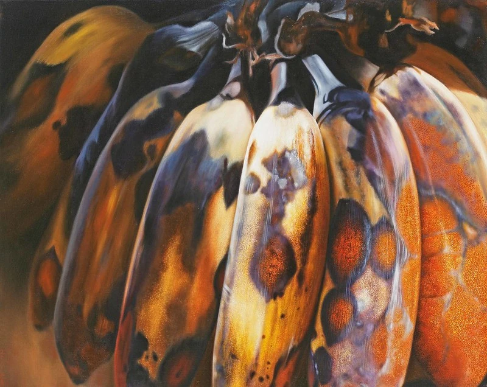
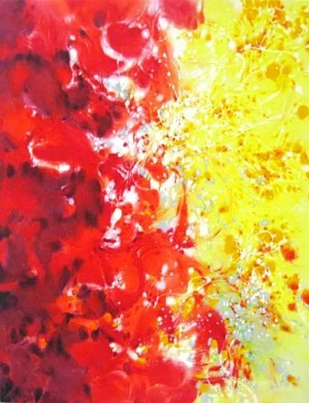
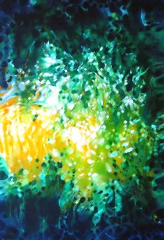
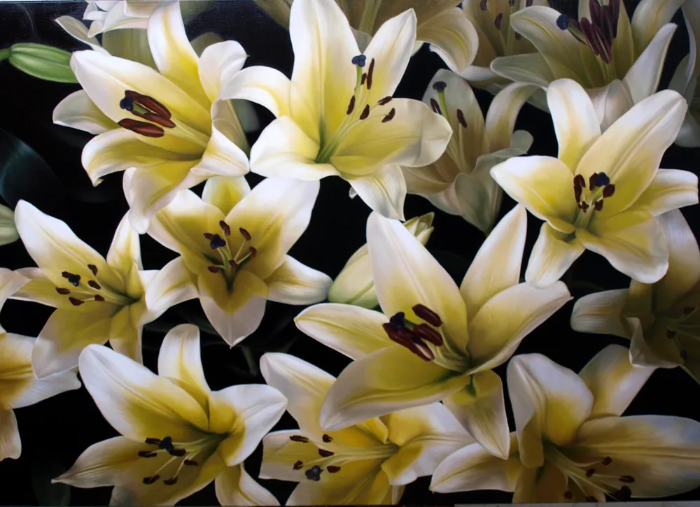
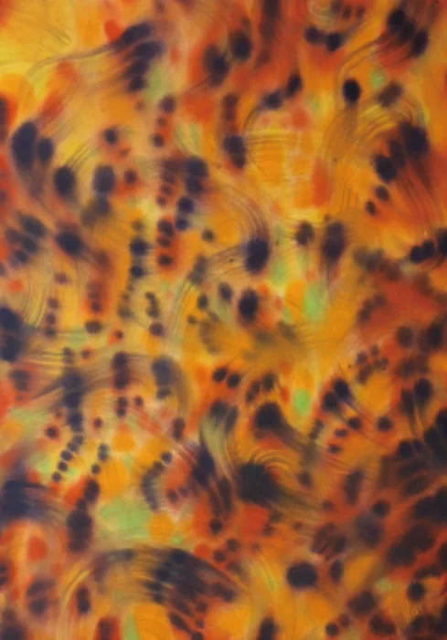

Works
1991–1995
Psyche & Eros情慾思維




1996–1998
Interior Scene內景




More works from this series are available for enquiry. Contact
1999
State of Heart心象


2000–2014
Realism (Zhi Xiang)植相




2007–2009
Take a Walk隨行
隨著行走／不在已知的探尋軌跡／隨著行走／思想暫停流轉／隨著行走／回首已是煙消雲散／我在此刻蒸發／留下的印記圖騰／什麼都是／什麼都不是Walking along / off the known paths of searching / walking along / thought pauses its turning / walking along / looking back, all has dispersed like smoke / in this moment I evaporate / the marks and totems left behind / are everything / are nothing
梁至青，2009 創作自述 (translation: proposal team, for review)





2010
Flowing流動


More works from this series are available for enquiry. Contact
2010
Cloud, Mountain, Water雲山水


2011–2012
Flower — Form and Colour花－形色




2012
Millennial Splendour千年之華


2017–2018
Guang Bian (Light Shift)光變
「感覺」是要透過思考、喘息以及一段停頓的時間才能從身體沈澱出的情緒與體認。“Feeling” is an emotion and awareness that settles out of the body only through thought, a breath, and a period of pause.
今周刊 2018（廣告企劃，原話待確認） (translation: proposal team, for review)


More works from this series are available for enquiry. Contact
2023 – ongoing
Ryukin (working title)琉金光燦

2024
Abiogenesis偶發 abiogenesis





Psyche & Eros No.1, 1991
Psyche & Eros No.20, 1994
Psyche & Eros No.29
Psyche & Eros No.30
Psyche & Eros No.32
Interior Scene No.3 (triptych), 1996
Interior Scene No.21
Interior Scene No.23
Interior Scene No.25
Interior Scene No.27
Interior Scene No.29
Interior Scene No.32
Interior Scene No.35
State of Heart No.13
State of Heart No.47
State of Heart No.98
Banana Leaves, 2000
Banana Leaves, 2001
Camphor Tree, 2003
Green Bamboo
Ginger Lily, 2004
Acacia Hill Collected
Banana Plant, 2011 Collected
Banana Grove Collected
Take a Walk No.36, 2007–2009 Collected
Take a Walk No.38, 2007–2009
Take a Walk No.33, 2007–2009
Take a Walk No.31, 2007–2009
Take a Walk No.32, 2007–2009
Take a Walk No.23, 2007–2009
Take a Walk No.24, 2007–2009
Take a Walk No.28, 2009 Collected
Take a Walk No.26, 2009 Collected
Take a Walk No.1, 2009 Collected
Take a Walk No.5, 2009 Collected
Take a Walk No.13, 2009 Collected
Take a Walk No.14, 2009 Collected
Take a Walk No.17, 2009 Collected
Flowing No.2, 2010
Flowing No.4, 2010
Flowing No.6, 2010
Flowing No.11, 2010
Flowing No.12, 2010
Flowing No.13, 2010
Flowing No.16, 2010
Flowing No.18, 2010
Cloud, 2010 Collected
Mountain, 2010 Collected
Water, 2010 Collected
White Roses-1, 2011 Collected
White Roses-2, 2011 Collected
Pink-Orange Roses-1, 2011 Collected
Oriental Lilies, 2011 Collected
Magenta Lily Collected
Yellow Lilies-2, 2012 Collected
Amaryllis-1, 2012
Millennial Splendour-1, 2012 Collected
Millennial Splendour-3, 2012 Collected
Millennial Splendour-4, 2012 Collected
Guang Bian No.6, 2017–2018
Guang Bian No.8, 2017–2018
Guang Bian No.14, 2017–2018
Guang Bian No.18, 2017–2018
Guang Bian No.20, 2017–2018
Guang Bian No.21, 2018 Collected
Guang Bian No.24, 2017–2018 Collected
Guang Bian No.28, 2017–2018
Guang Bian No.29, 2017–2018
Guang Bian No.33, 2017–2018
Guang Bian No.34, 2017–2018
Ryukin No.01, 2023 Collected
Abiogenesis No.1, 2024
Abiogenesis No.2, 2024
Abiogenesis No.3, 2024
Abiogenesis No.4, 2024
Abiogenesis No.5, 2024
Abiogenesis No.6, 2024
Abiogenesis No.7, 2024
Abiogenesis No.8, 2024
Abiogenesis No.9, 2024
Abiogenesis No.10, 2024
Abiogenesis No.11, 2024
Abiogenesis No.12, 2024
Abiogenesis No.13, 2024
No works match.